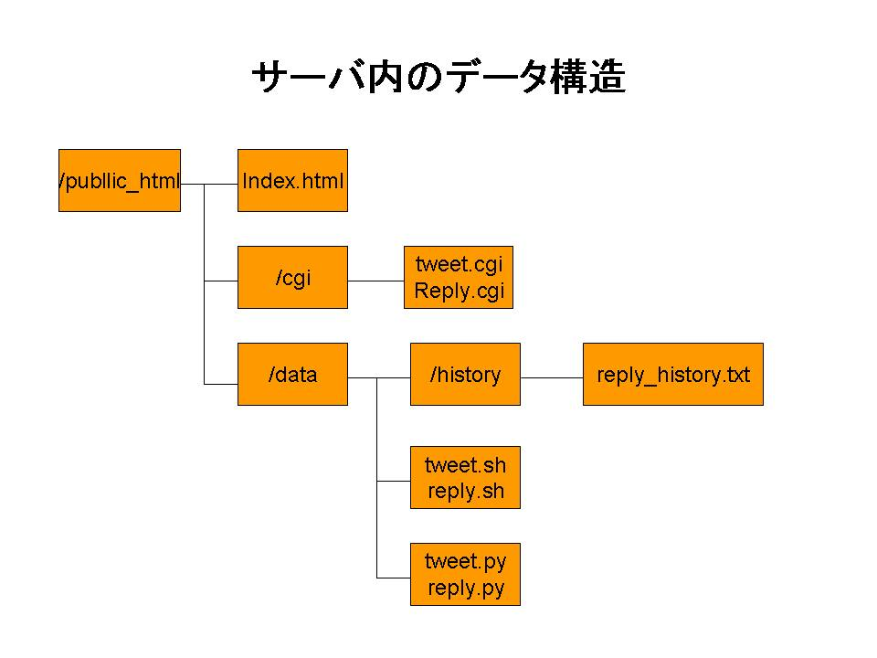

自動ツイート、特定の言葉にリプライするbot
- 製作動機・製作目標
- 製作方法とか
- twitterAPIを取得する。
- 自動ツイート出来るようにする。
- 特定の語に反応するリプライ機能を実装する。
- 運営する。
- 製作内容とか
- tweepy
- 製作結果
- 謝辞とかそういった類のもの
- 付録
某５％で露出するbot的なのを作りたいと思った。
化学の点数がやばかった。(元素記号がどうこうはほとんど関係ない。）
英語頑張って読んで、英語で指定字数以上の質問内容に答えた。
pip installで以下のライブラリをインストールする。
実装環境となるサーバーを「xrea」からレンタルした。
レンタルサーバーでは管理者権限を行使できなかったが、標準搭載のpythonにtweepyがインストールされていたため問題には至らなかった。
まず初めにpythonからツイートをした。
api.update_status("text")でAPIを登録したアカウントでツイート出来るようである。
これに、ツイートする内容、ツイートした時間(ツイートする内容が連続で同じだとtwitter側でブロックされてしまうのを防ぐため)を書き込んでツイートさせるようにする。
ツイートさせるテキストはunicode形式でないとツイート出来なかった。当初、別でファイルを用意して読み込ませたかったが、内容を直に書くことで解決した。
次に、自動でコードを実行させる。
この製作では、GoogleAppScript(以下GAS)を使って実行させた。
GASでCGIを起動し、コード実行用のシェルスクリプトを作動させる。
UrlFetchApp.fetch("URL");でURL先のCGIを起動させた。
実行させる時間はGASで調整した。
CGIは起動したらシェルスクリプトを、シェルスクリプトはpythonコードを実行させる用にしてある。
サーバーのファイル構造は以下である 
ファイル構造(図１)
次に、特定の語に反応し返信させる。
一番新しい自分宛てのツイートを参照し、まだ返してないツイートならば応答し、既に返信しているツイートならば無視するようにする。
現在は数字のみを対応させているので一番大きい数字から順に受け取った数字か判定している。
送られてくる数字は文字列としての数字なため直接使用できない。また、小さい数字から順に判定すると別の数字として判定されることがあった。
(例:受け取った数字 14,判定した数字 1)
自動ツイートと同じようにGASからCGIを起動してシェルスクリプトを実行し、定期的に参照するようにしている。
作成したtwitterbot(@elements_boron)
自動ツイート、特定の語にリプライするbotを作成することが出来た。
ツイート頻度やツイート内容などまだまだ発展させることができそうである。
いつか、内容を別ファイルで用意して運営したい。
製作する際に参考にさせていただいたサイト様、ありがとうございました。この場でご紹介させて頂きます。
本項では、完成したプログラムを掲載する。
セキュリティのためAPIやサイトURLは伏せています。
python リスト1
python リスト2
GAS リスト
Shell リスト
CGI リスト